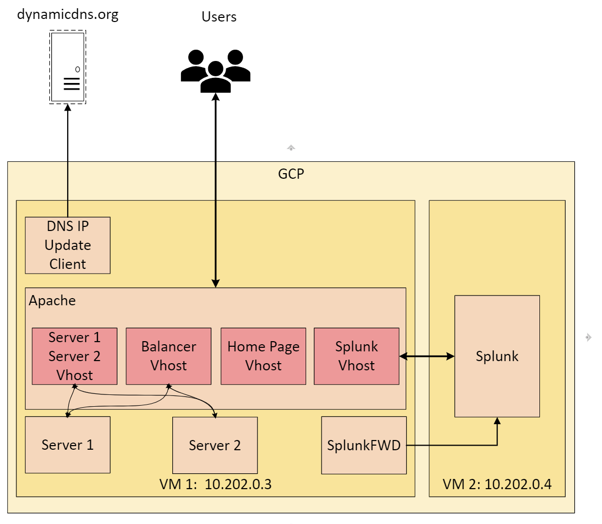
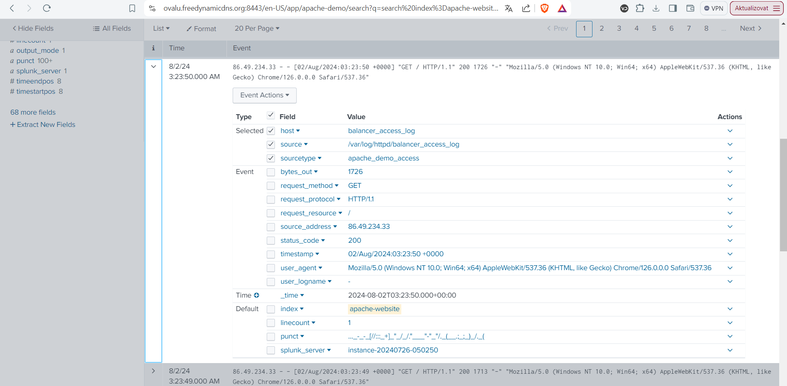

Splunk - Apache
An implementation showcase by Ondřej Valů
An implementation showcase by Ondřej Valů
This project showcases a comprehensive and practical cross-application skill set. Key components include:
⮞ Creating and managing virtual machines (VMs) in Google Cloud Platform (GCP)
⮞ Installing and configuring Apache servers to host multiple virtual hosts.
⮞ Registering and updating DNS record, obtaining and deploying SSL certificate.
⮞ Connecting the Logs to a Splunk instance for processing and analysis
Feel free to test the funcionalities or inspect the configuration on GitHub
Following diagram represents the top-level architecture and relationships between different components used in the project.
This section presents network routing related utilizating apache proxying and mock python Flask servers
Project hosts 2 Flask entpoints and joined balanced access point. You can easily access severs directly via brwoser:
Or benefit from balanced roundrobin access point with a health check monitor. This route will alternate between both servers till they´re configured to return non-error status code
you can try and set an internal status code for any server using an example bellow:
curl -X POST -H "Content-Type: application/json" -d "{\"status_code\": 500, \"message\": \"status set on error code 500\"}" https://ovalu.freedynamicdns.org:5000/state/
curl -X POST -H "Content-Type: application/json" -d "{\"status_code\": 200, \"message\": \"Status set on OK code 200\"}" https://ovalu.freedynamicdns.org:5000/state/
You may inspect parsed logs generated in the project boarded in an Splunk instance avalible here:
Login: visitor
password: splunkvisitor
